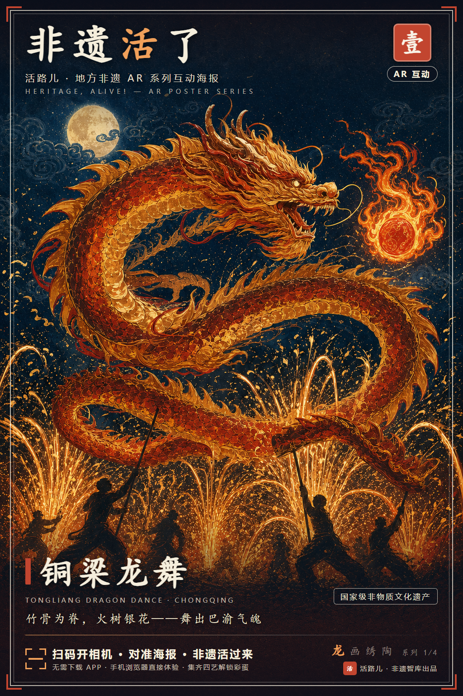
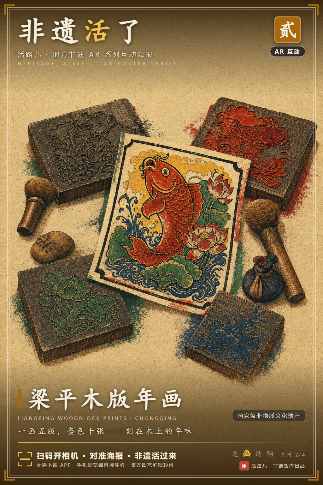
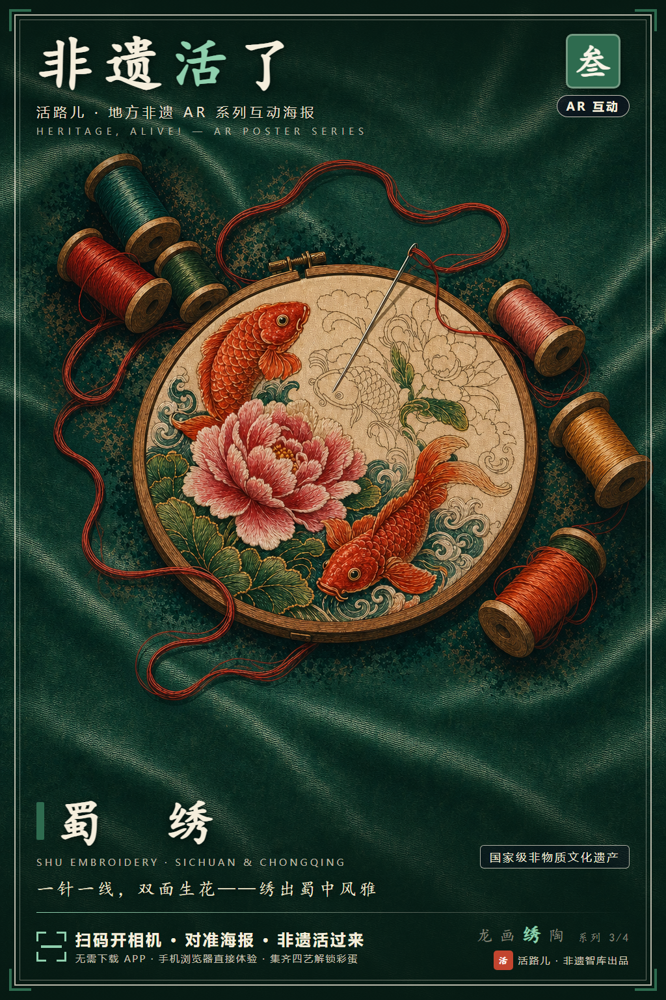
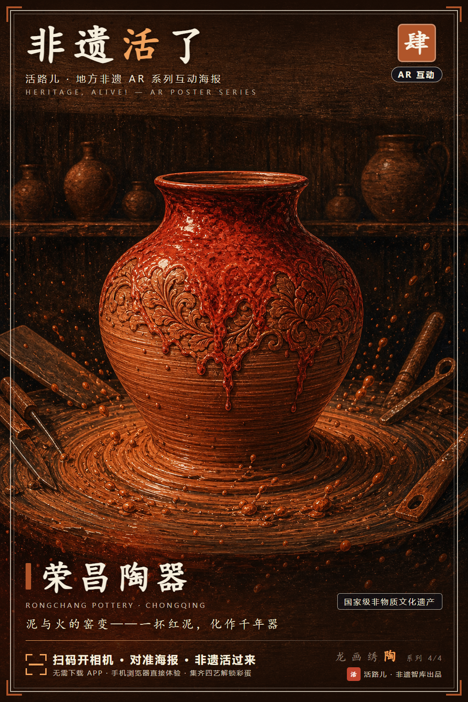
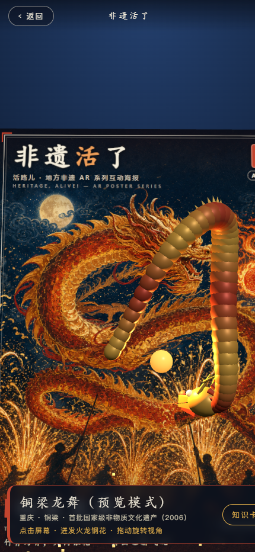
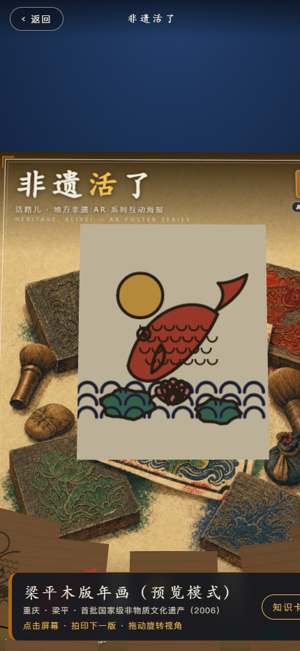
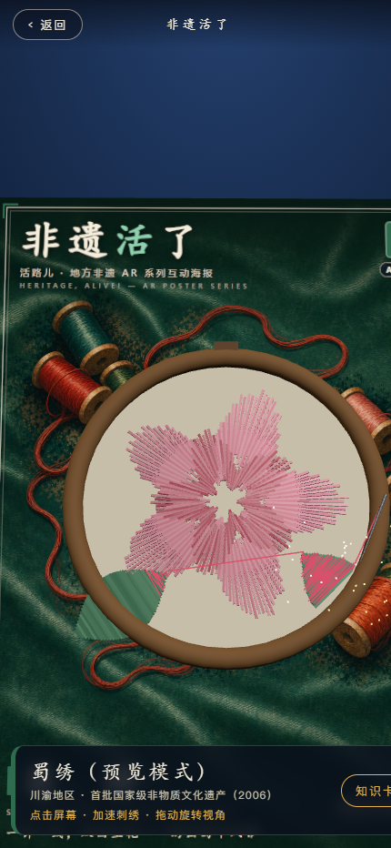
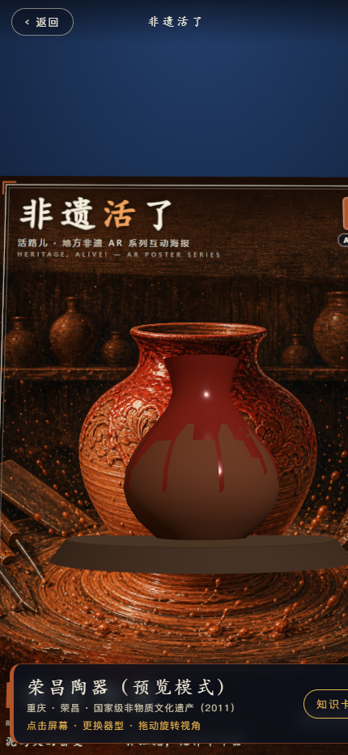
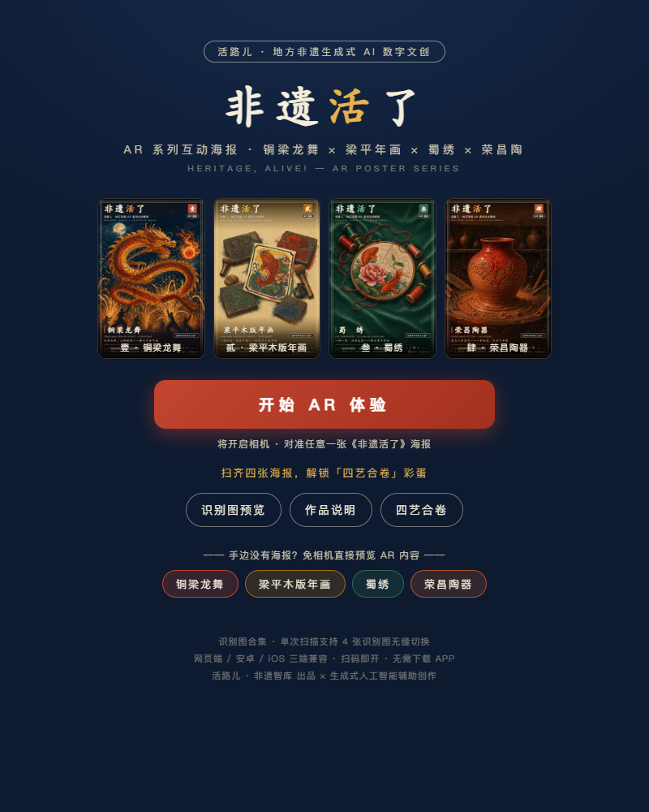

海报是静态的"展柜"。本作品以四张系列海报为载体，用手机一扫，非遗当场"活"过来——扫铜梁龙，巨龙破纸腾空、火龙钢花迸溅；扫梁平年画，墨线版与套色版逐层拍印，看懂"一画多版"；扫蜀绣，银针引线在空中一针一针绣出芙蓉；扫荣昌陶，陶坯在拉坯轮上旋转成型、施釉窑变。作品名即宣言：让非遗不止走出展柜，更跳出纸面、走回生活，直接呼应活路儿"让非遗被看见、被体验、被传播、被带回生活"的品牌理念。
四个项目全部为川渝国家级非物质文化遗产，与"活路儿"源自川渝方言"做活路"的品牌根脉严丝合缝，构成完整的"地方非遗"叙事：
| 编号 | 非遗项目 | 地域 · 级别 | AR 内容与工艺叙事 |
|---|---|---|---|
| 壹《龙》 | 铜梁龙舞 | 重庆铜梁 · 国家级（2006 首批） | 巨龙腾空盘旋追逐火焰龙珠，底部火龙钢花如瀑迸溅，再现"火树银花不夜天" |
| 贰《画》 | 梁平木版年画 | 重庆梁平 · 国家级（2006 首批） | 五块雕版依次飞临拍印，先套色后墨线，动态演示"一画多版"套色工艺 |
| 叁《绣》 | 蜀绣 | 川渝地区 · 国家级（2006 首批） | 银针引线凌空走针，缎面上逐针绣出五瓣芙蓉，呈现针法与丝理之美 |
| 肆《陶》 | 荣昌陶器 | 重庆荣昌 · 国家级（2011） | 红泥在拉坯轮上成型，朱砂釉自上而下挂釉滴垂，窑火中完成"窑变" |
四张海报共用统一品牌版式（活路儿标识、壹贰叁肆编号印章、四色分主题），并通过「四艺集齐」机制连为一个系统：扫齐四张海报即解锁「四艺合卷」彩蛋，进度实时显示（x/4）。四张海报从"并列的作品"变成"完整的收集之旅"，天然适配展览打卡、文旅动线与社交传播场景，也为每个非遗配备了知识卡片（简介 + 工艺四步），让体验兼具趣味与知识密度。





落地页内置「识别图预览」：一台手机 + 一块屏幕即可完成全部评审——电脑打开作品链接放大海报，手机扫码对准屏幕即可识别，无需打印。
另设「免相机预览」入口（?scene=dragon 等四个直达链接）：无需相机权限即可查看四个 AR 场景的完整动画与交互，拖动旋转视角、点击触发交互，最大限度降低评审与传播门槛。
微信内置浏览器自动检测并提示"在浏览器中打开"；不支持相机/WebGL 的设备可降级浏览四艺知识卡片与识别图。
作品采用自托管开源 WebAR 技术栈（MindAR 图像追踪 + Three.js 渲染），esbuild 打包为单文件应用（1.7MB），部署于 HTTPS 静态站点。不依赖任何商业 AR 平台，从根本上保证零水印与长期可访问。
| 赛题硬性要求 | 实现方式 |
|---|---|
| 无平台、厂商、个人水印，画面无遮挡标识 | 自托管开源 MindAR + Three.js，非商业 SaaS 平台，全程零水印 |
| 合集模式，单次扫描识别不小于三张识别图 | 单个 targets.mind 识别文件编译 4 张识别图，超出要求 |
| 丢失追踪后无缝切换任意识别图 | 多锚点事件驱动（maxTrack=1），丢失后即扫即换，无需刷新 |
| 兼容网页端 / 安卓 / iOS，扫码即开免下载 | 纯 WebAR（getUserMedia + WebGL），Safari / Chrome / Edge 浏览器直开 |
| 多设备加载、交互稳定一致 | 全程序化几何建模 + 实例化渲染，无外部 3D 模型文件，总资源约 8MB |
| 识别图源文件 | 识别版 1024×1536 / 印刷版 2048×3072 / AI 原始画面三套齐交 |
识别层（targets.mind 四目标合集）→ 渲染层（Three.js 四场景，事件驱动切换）→ 交互层（点击交互 + 知识卡片 + 收集进度）→ 传播层（扫码直开 + 免相机预览 + 彩蛋分享）。
本作品为生成式人工智能全流程辅助创作的实践样本，人与 AI 的分工明确：人负责文化判断与审美决策，AI 负责生成与实现。
| 环节 | AI 的工作 |
|---|---|
| 提取非遗元素 | 从铜梁龙舞、梁平年画、蜀绣、荣昌陶的公开工艺特征中提取龙鳞、套色版式、针法肌理、器型轮廓等视觉基因 |
| 生成视觉素材 | 四张海报主画面由 AI 文生图原创生成（同系列风格链式引导），无任何第三方素材 |
| 重构系列排版 | AI 编写程序化排版系统：统一品牌框架 + 四色主题 + 编号印章，一键输出识别版/印刷版/缩略图 |
| 建模三维场景 | 四个 AR 场景全部为 AI 编写的程序化参数建模与动画（样条龙身、套版拍印、针迹生成、车削成型） |
| 优化色彩与体验 | 主题色板统一校验，三端渲染一致性调优，交互与降级方案设计 |
海报画面为 AI 原创生成，AR 场景为原创程序化建模，代码基于开源协议（MindAR/Three.js 均为 MIT License）自托管使用，无第三方素材版权风险，符合大赛版权保护与存证理念。
| 作品名称 | 《非遗活了》—— 活路儿地方非遗 AR 系列互动海报 |
| 参赛类别 | 类别四：人工智能 + 数字文创类（AR 非遗数字交互文创作品） |
| 作品形式 | AR 非遗互动海报合集（4 张识别图 + 4 个 AR 交互场景 + 集齐彩蛋） |
| 公开访问链接 | https://kdxboy.github.io/heritage-alive-ar/ |
| 体验方式 | 手机浏览器扫码 → 开始 AR 体验 → 对准任意一张系列海报 |